PLC mantık iyileştirmeleri ve HMI geliştirmeleriyle genel üretim makinelerinde çevrim sürelerini optimize eden çalışmalar. Eski kontrol bileşenleri güncellendi, kablolama revize edildi ve üretim hattı verimliliği artırıldı.
Seri üretim tesisleri, çeşitli endüstriyel makineler için güvenilir ve verimli otomasyon sistemleri gerektiriyor. Her makine, kontrol mantığı, güvenlik sistemleri, operatör arayüzleri ve mevcut üretim altyapısı ile entegrasyon açısından benzersiz gereksinimlere sahip. Üreticiler, verimliliği maksimize eden, operatör güvenliğini sağlayan, kapalı kalma süresini en aza indiren ve gerçek zamanlı izleme-kontrol yetenekleri sağlayan özel otomasyon çözümleri ihtiyaç duyuyor.
Seri üretim ortamlarında çeşitli endüstriyel makineler için kapsamlı otomasyon sistemleri tasarlamak ve uygulamak. Makine kontrol mantığı, güvenlik interlokları ve üretim sıralama işlemleri için özel PLC programları geliştirmek. Operatörler için gerçek zamanlı görselleştirme, alarm yönetimi ve üretim takibi sunan sezgisel HMI arayüzleri oluşturmak. Sensör, aktuatör, sürücü ve güvenlik cihazlarını tutarlı kontrol sistemlerine entegre etmek.
Projeler, makine gereksinimleri, üretim iş akışları ve güvenlik düzenlemeleri detaylı analizle başlamıştır. Kontrol sistem tasarımı, elektrik şeması geliştirme, G/Ç eşleştirme, ağ mimarisi ve güvenlik sistemi tasarımı içerir. PLC programlama, IEC 61131-3 standartlarını takip edererek işlev blokları, durum makineleri ve standart programlama uygulamalarını kullanarak yapılandırılmış, bakım yapılabilir kod uygulanmasını içerir.
HMI geliştirme, operatör kullanılabilirliğine odaklanarak net görselleştirmeler, alarm sistemleri, üretim sayaçları ve tanı araçları sunar. Sistem entegrasyonu, PLC'leri değişken frekanslı sürücüler, servo motorlar, pnömatik sistemler ve Modbus, Profinet veya tescilli protokolleri kullanarak endüstriyel ağlara bağlar. Kapsamlı test, dokümantasyon ve operatör eğitimi başarılı konuşlandırma ve uzun vadeli güvenilirlik sağlar.
Montaj ekipmanları, test istasyonları, paketleme makineleri ve malzeme taşıyıcı sistemler dahil çok sayıda üretim tesisinde 30+ farklı endüstriyel makine için PLC programları geliştirdim.
Acil durum durdurma, güvenlik PLC'leri, ışık perdeler ve interlock sistemleri içeren kapsamlı güvenlik sistemleri uyguladım - operatör koruması ve mevzuat uyumluluğu sağlandı.
Gerçek zamanlı izleme, alarm yönetimi, üretim takibi, reçete yönetimi ve tanı araçları ile operatörlerin makine işletimini verimli şekilde yapmasını sağlayan kullanıcı dostu arayüzler oluşturdum.
Değişken frekanslı sürücüler, servo sistemler ve step motorları hassas hız kontrolü, konumlandırma ve üretim makinerinde senkronizasyon için yapılandırdım ve entegre ettim.
Çok adımlı süreçler, kalite kontrolleri, veri günlüğü ve üretim raporlaması ile karmaşık üretim dizilerini otomatikleştirerek tutarlılığı artırdım ve operatör iş yükünü azalttım.
Mevcut makine kontrol sistemlerini iyileştirerek %40 verimlilik artışı sağladım - geliştirilen mantık, daha iyi sıralama, azalan döngü süreleri ve geliştirilmiş hata yönetimi kullanıldı.
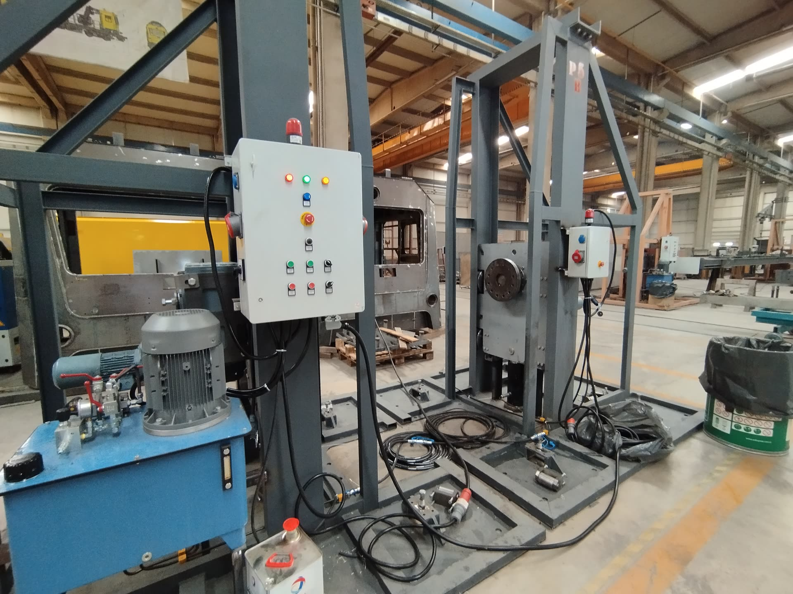
PLC kontrolü ile güncellenmiş üretim makineleri
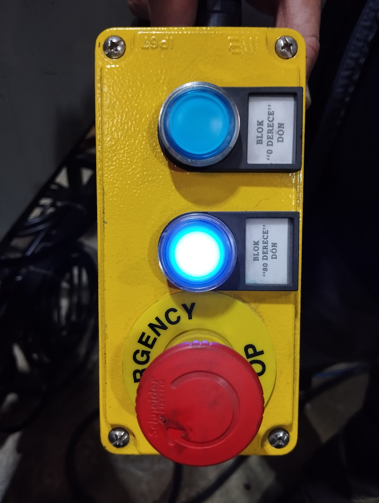
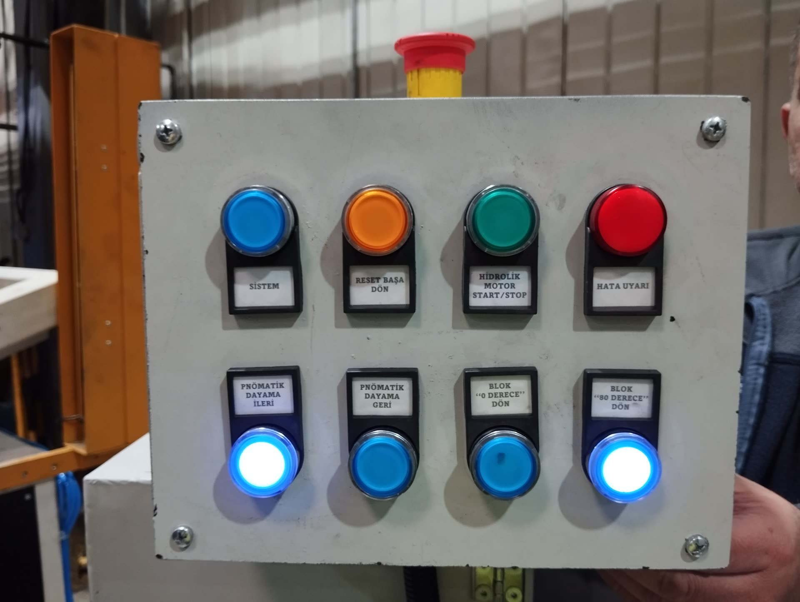
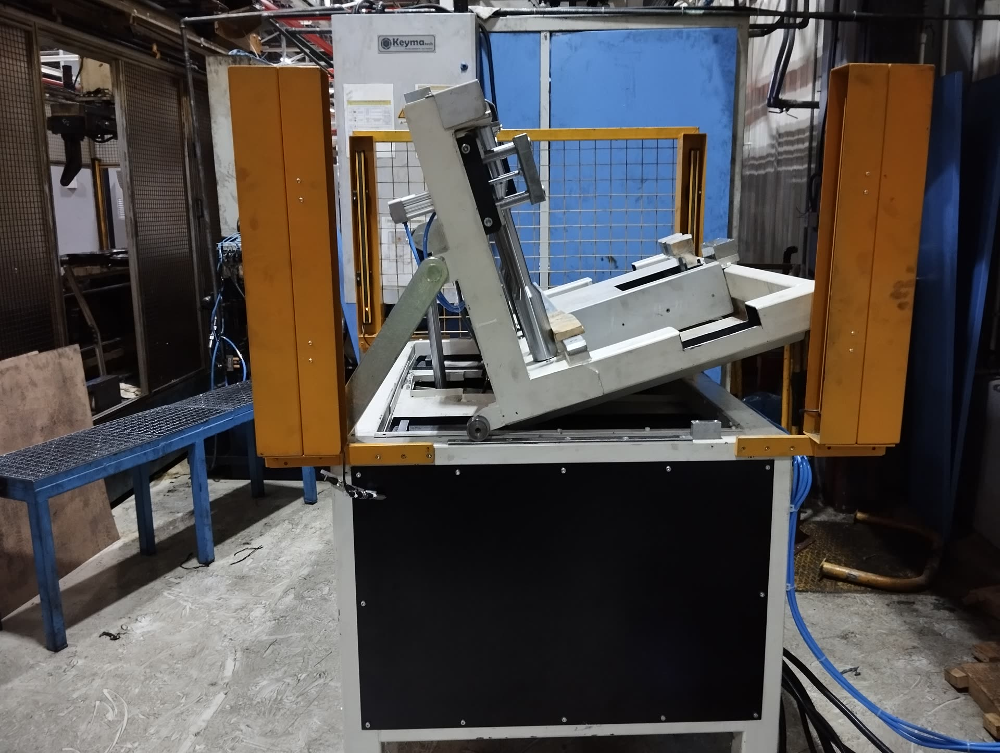
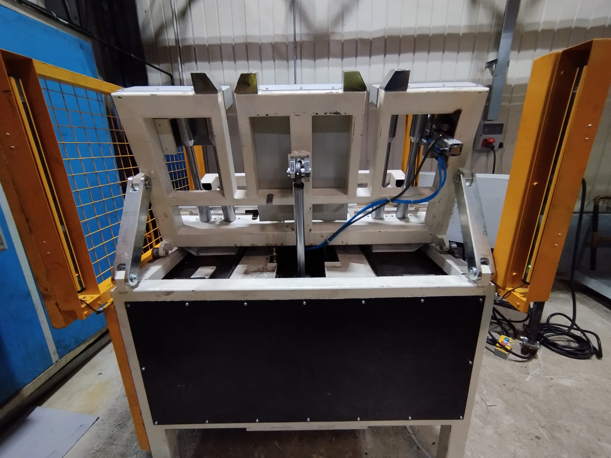
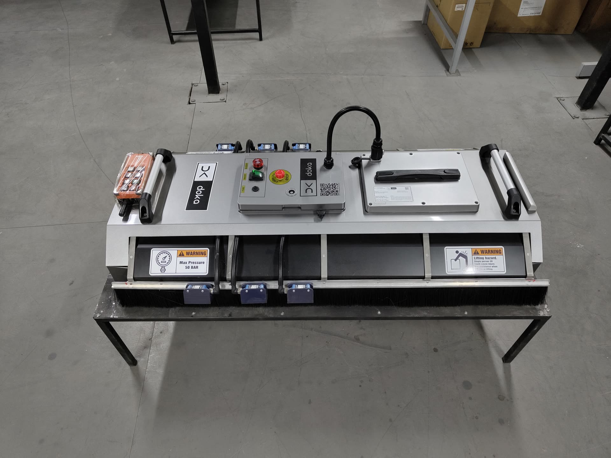
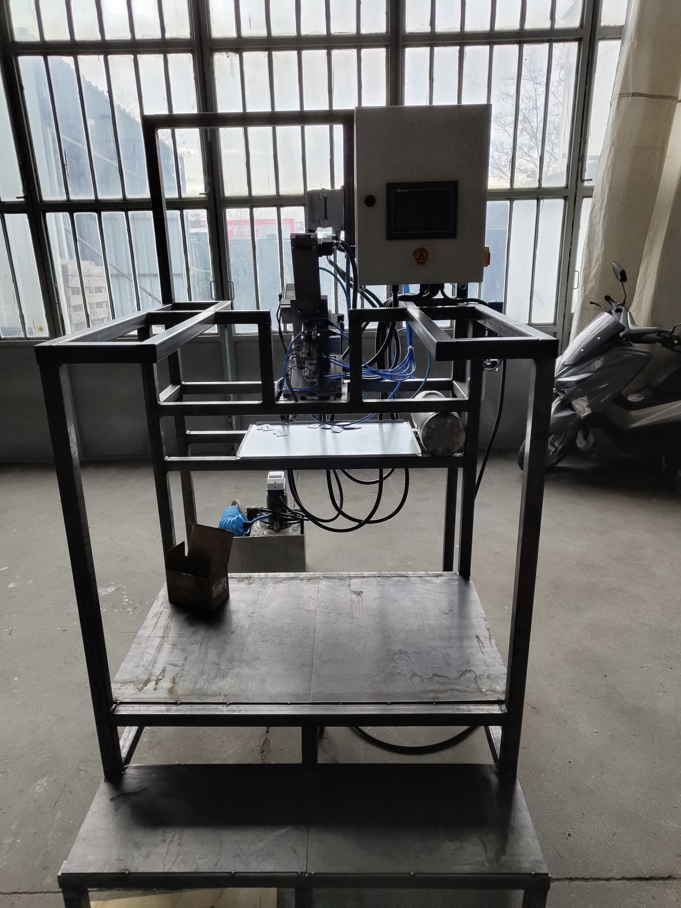
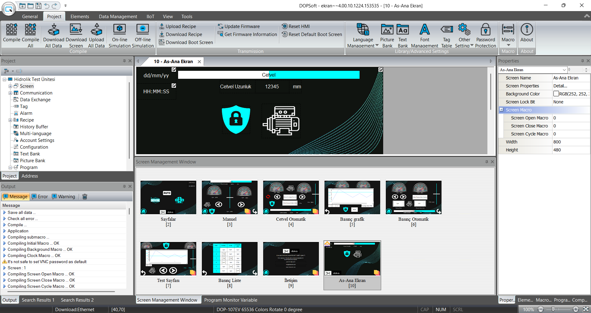
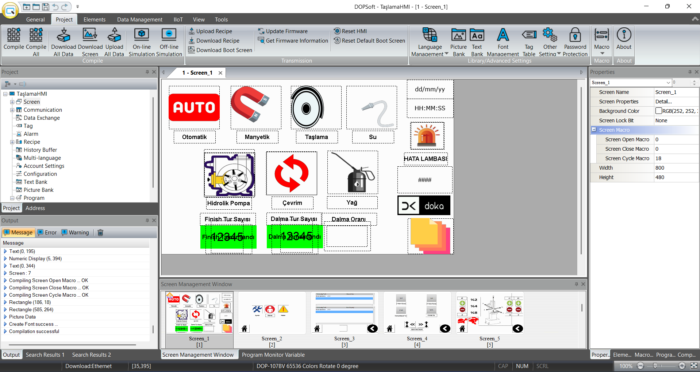
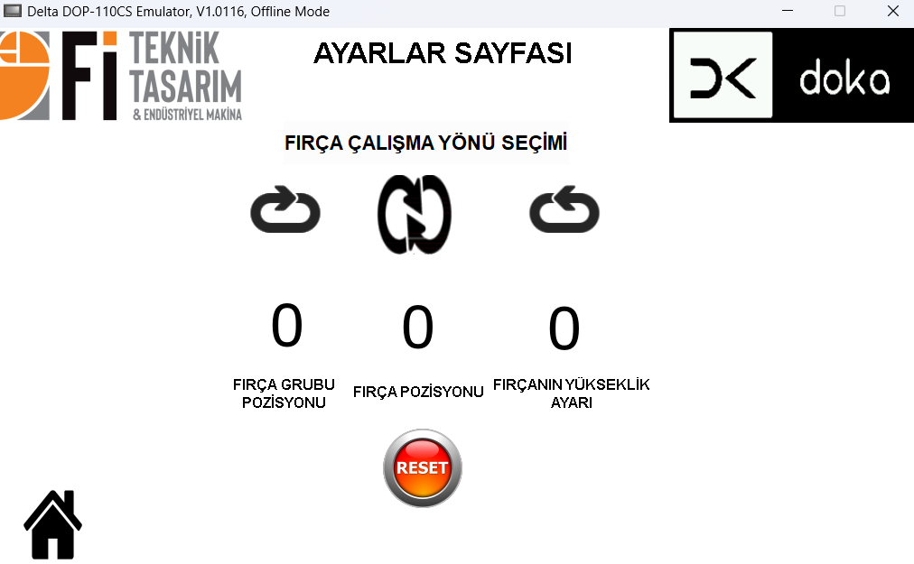
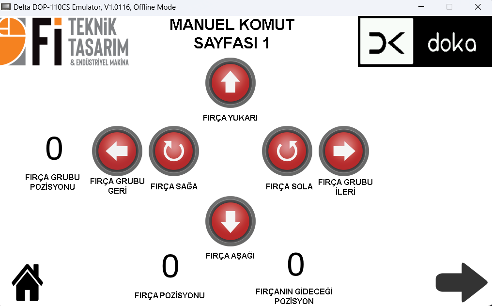
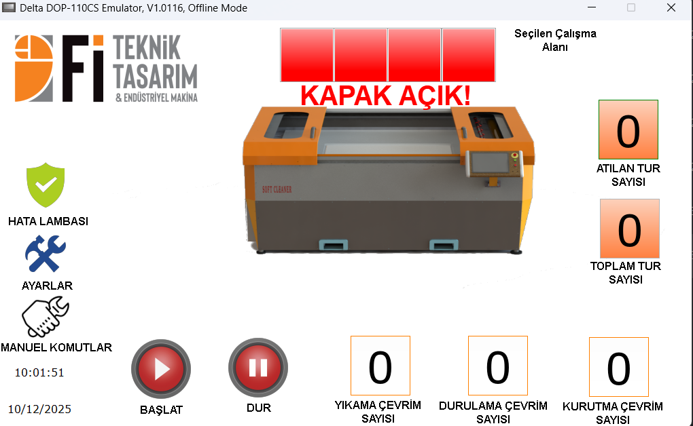